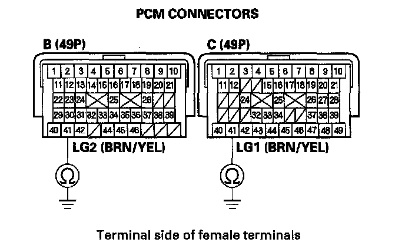
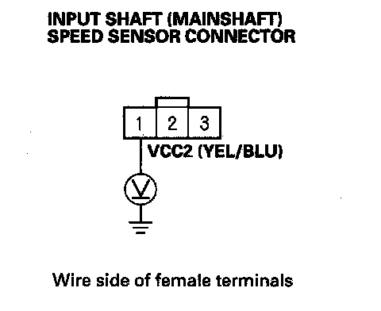
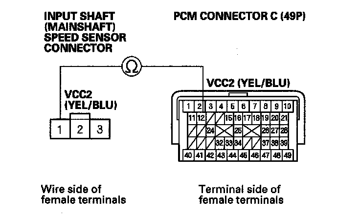
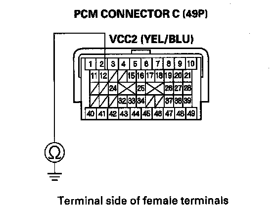
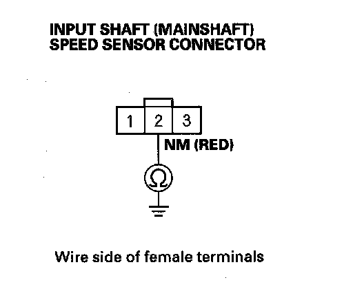
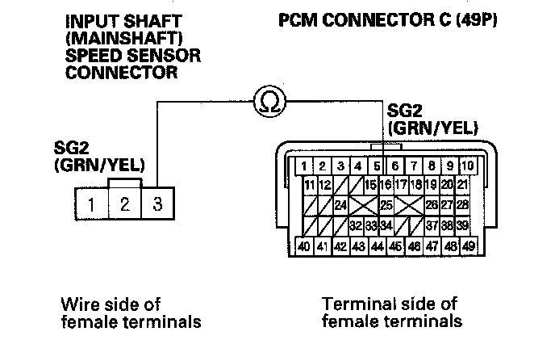
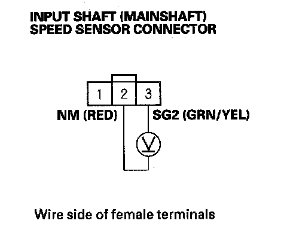
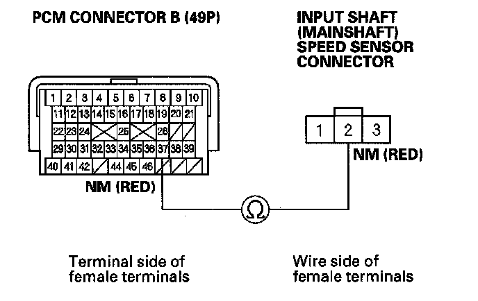

DTC Troubleshooting
DTC P0716: Problem in Input Shaft (Mainshaft) Speed Sensor CircuitDTC P0717: Problem in Input Shaft (Mainshaft) Speed Sensor Circuit (No Signal Input)
NOTE:
^ Before you troubleshoot, record all freeze data and any on-board snapshot, and review General Troubleshooting Information.
^ This code is caused by an electrical circuit problem and cannot be caused by a mechanical problem in the transmission.
1. Clear the DTC with the HDS.
2. Raise the vehicle on a lift, make sure it is securely supported, and allow all four wheels to rotate freely.
3. Check for proper input shaft (mainshaft) speed sensor installation. If the sensor was installed improperly, correct the problem, then go to step 37.
4. Start the engine, and turn the VSA off (the light on the VSA OFF switch comes on). Run the engine in the D position, and hold the vehicle at speeds over 30 mph (48 km/h) for more than 10 seconds. Slow down and stop the wheel.
5. Monitor the OBD STATUS for P0716 or P0717 in the DTCs/Freeze Data in A/T Mode Menu for a pass/fail.
Does the result indicate FAILED?
YES - Go to step 6.
NO - Intermittent failure, the system is OK at this time. Check for loose or poor connections at the PCM and input shaft (mainshaft) speed sensor connectors. If the HDS indicates NOT COMPLETED, return to step 4 and recheck.
6. Turn the ignition switch OFF.
7. Jump the SCS line with the HDS.
8. Disconnect PCM connectors B (49P) and C (49P).
9. Check for continuity between PCM connector terminals B41 and body ground, and between C41 and body ground.

Is there continuity?
YES - Go to step 10.
NO - Repair open in the wires between PCM connector terminals B41, C41 and ground (G101), or repair poor ground (G101), then go to step 38.
10. Connect PCM connectors B (49P) and C (49P).
11. Disconnect the input shaft (mainshaft) speed sensor connector.
12. Turn the ignition switch ON (II).
13. Measure the voltage between input shaft (mainshaft) speed sensor connector terminal No. 1 and body ground.

Is there about 5 V?
YES - Go to step 18.
NO - Go to step 14.
14. Turn the ignition switch OFF.
15. Disconnect PCM connector C (49P).
16. Check for continuity between PCM connector terminal C12 and input shaft (mainshaft) speed sensor connector terminal No. 1.

Is there continuity?
YES - Go to step 17.
NO - Repair open in the wire between PCM connector terminal C12 and the input shaft (mainshaft) speed sensor, then go to step 38.
17. Check for continuity between PCM connector terminal C12 and body ground.

Is there continuity?
YES - Repair short in the wire between PCM connector terminal C12 and the input shaft (mainshaft) speed sensor, then go to step 38.
NO - Check for poor connections and loose terminals at the PCM. If the connections are OK, go to step 33.
18. Turn the ignition switch OFF.
19. Disconnect PCM connector B (49P).
20. Check for continuity between input shaft (mainshaft) speed sensor connector terminal No. 2 and body ground.

Is there continuity?
YES - Repair short in the wire between PCM connector terminal B37 and the input shaft (mainshaft) speed sensor connector, then go to step 38.
NO - Go to step 21.
21. Disconnect PCM connector C (49P).
22. Check for continuity between PCM connector terminal C16 and input shaft (mainshaft) speed sensor connector terminal No.3.

Is there continuity?
YES - Go to step 23.
NO - Repair open in the wire between the input shaft (mainshaft) speed sensor connector and PCM connector terminal C16, then go to step 38.
23. Connect PCM connectors B (49P) and C (49P).
24. Turn the ignition switch ON (II).
25. Measure the voltage between input shaft (mainshaft) speed sensor connector terminals No. 2 and No. 3.

Is there about 5 V?
YES - Go to step 29.
NO - Go to step 26.
26. Turn the ignition switch OFF.
27. Disconnect PCM connector B (49P).
28. Check for continuity between PCM connector terminal B37 and input shaft (mainshaft) speed sensor connector terminal No. 2.

Is there continuity?
YES - Go to step 33.
NO - Repair open in the wire between PCM connector terminal B37 and the input shaft (mainshaft) speed sensor, then go to step 38.
29. Connect the input shaft (mainshaft) speed sensor connector.
30. Clear the DTC with the HDS.
31. Start the engine, run the vehicle in the D position, and hold the vehicle at speeds over 30 mph (48 km/h) for more than 10 seconds.
32. Monitor the OBD STATUS for P0716 or P717 in the DTCs/Freeze Data in A/T Mode Menu for a pass/fail.
Does the result indicate FAILED?
YES - Replace the input shaft (mainshaft) speed sensor, then go to step 38.
NO - Go to step 33.
33. Reconnect all connectors.
34. Update the A/T software in the PCM if it does not have the latest software, or substitute a known-good PCM.
35. Start the engine, run the vehicle in the D position, and hold the vehicle at speeds over 30 mph (48 km/h) for more than 10 seconds.
36. Check for DTC(s) in the DTCs/Freeze Data in A/T Mode Menu with the HDS.
Is DTC P0716 or P0717 indicated?
YES - If the PCM was updated, substitute a known-good PCM, then recheck. If the PCM was substituted, go to step 1.
NO - Go to step 37.
37. Monitor the OBD STATUS for P0716 or P717 in the DTCs/Freeze Data in A/T Mode Menu for a pass/fail.
Does the result indicate PASSED?
YES - If the PCM was updated, troubleshooting is complete. If the PCM was substituted, replace the original PCM. If any other DTCs were indicated on step 36, go to the indicated DTC's troubleshooting.
NO - If the HDS indicates FAILED, check for poor connections and loose terminals at the input shaft (mainshaft) speed sensor and the PCM. If the PCM was updated, substitute a known-good PCM, then recheck. If the PCM was substituted, go to step 1. If the HDS indicates NOT COMPLETED, return to step 35 and recheck.
38. Clear the DTC with the HDS.
39. Start the engine, run the vehicle in the D position, and hold the vehicle at speeds over 30 mph (48 km/h) for more than 10 seconds.
40. Check for DTC(s) in the DTCs/Freeze Data in A/T Mode Menu with the HDS.
Is DTC P0716 or P0717 indicated?
YES - Check for poor connections and loose terminals at the input shaft (mainshaft) speed sensor and the PCM, then go to step 1.
NO - Go to step 41.
41. Monitor the OBD STATUS for P0716 or P0717 in the DTCs/Freeze Data in A/T Mode Menu for a pass/fail.
Does the result indicate PASSED?
YES - Troubleshooting is complete. If any other DTCs were indicated on step 40, go to the indicated DTC's troubleshooting.
NO - If the HDS indicates FAILED, check for poor connections and loose terminals at the input shaft (mainshaft) speed sensor and the PCM, then go to step 1. If the HDS indicates NOT COMPLETED, return to step 39 and recheck.